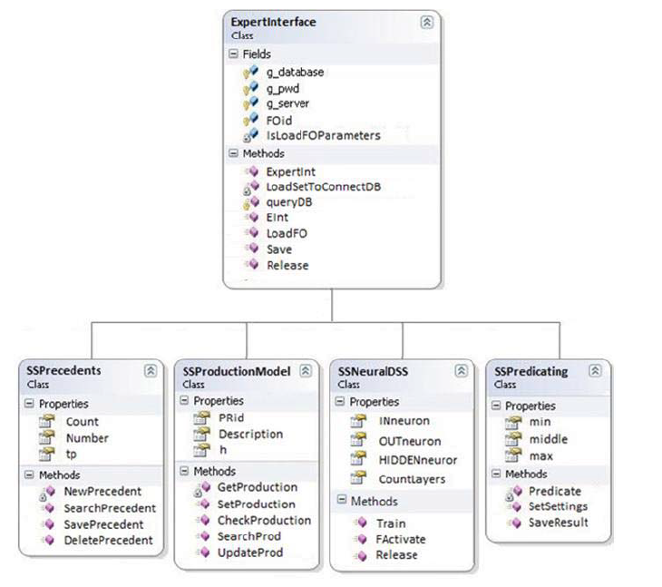
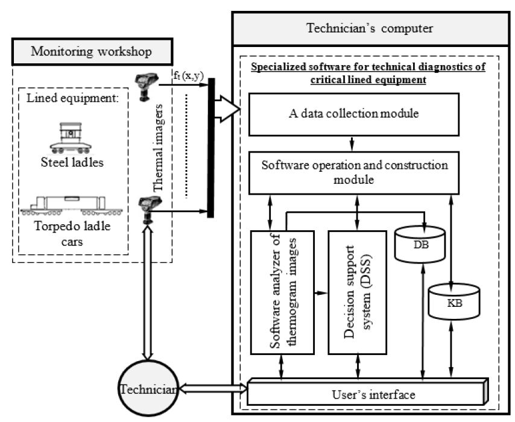

Review on Object-Oriented Design of Expert System Software for the Maintenance of
Lined Equipment
Group 1
Name
Anant Jain
22114005
Dhas Aryan Satish
22117046
Divij Rawal
22114031
Parit Gupta
22117100
Pratyaksh Bhalla
22115119
Roopam Taneja
22115030
Contribution
Application Domains, Positives, Negatives,
Implementation(Neural Net Part)
Summary, Positives, Negatives
Implementation(Design Part), Positives,
Negatives
Application Domains, Positives, Negatives
Summary, Positives, Negatives
Summary, Positives, Negatives
Paper details
An Object-Oriented Design of Expert System Software
for Evaluating the Maintenance of Lined Equipment
Yemelyanov V.A.
Department of Business Informatics
Financial University under the Government of the Russian
Federation
Moscow, Russia
v.yemelyanov@gmail.com,
Olenev L.A.
Laboratory of applied research and business engineering
Plekhanov Russian University of Economics
Moscow, Russia
aa@nedelk.in
Nedelkin A.A.
Department of Informatics
Plekhanov Russian University of Economics
Moscow, Russia
aa@nedelk.in
Published in 2019 International Multi-Conference on
Industrial Engineering and Modern Technologies (FarEastCon)
Summary
Problem Statement:
One of the types of critical equipment at metallurgical and machine
building enterprises is lined equipment, which includes stationary and torpedo ladle cars,
steel-teeming ladles.
Lined equipment: Refers to industrial
equipment that has some form of internal lining or coating to protect it from the substances
or processes it comes into contact with.
Lined equipment is used for critical tasks like weighing the cast iron
being used in the industry.
The estimation of steel weight is an important task for the design and
cost calculation of merchant ships since the steel weight is the main component of the weight of a
light ship and hence this measurement is very critical.
The author identified that the operation of critical lined equipment
was characterized by an unacceptable level of measurement error and subjectivity.
For example:
The curvature of railroad among other factors leads to
sampling of unreliable data and measurement error.
When inserting cast iron into lined equipment, measuring mass
before and after is characterized by high error due to different intensities of filling.
Subjectivity of technologists also incorporates errors in
measurements.
Also a need for diagnostics, monitoring and evaluation of the technical
condition of lined equipment was strongly felt.
The author tried to address this problem by automating the process of
assessing the condition of critical lined equipment by an object software model.
Solution Approach:
The proposed solution is an improvement over the traditional method
marred by errors. Neural networks are employed to assess the condition of equipment.
The author has developed a client-server software model that implements
a graphical user interface for providing input of initial data, parameters for calculating and
displaying obtained results.
An object oriented approach was used and the object model was created
using UML (Unified Modeling Language).
The solution combines three models as explained below:
Models Employed:
Use Model:
Includes software functionality from POV of the technologist
responsible for monitoring the condition of lined equipment.
The use model has 10 use cases and 1 actor (the
technologist).
The “includes” relationship indicates the use cases which
must be executed as part of some other use case. It is helpful when there is common
functionality across multiple use cases.
The “extends” relationship allows one to show activities that
are optional to perform for successful execution of a particular use case.
The functionality of use cases are described in upcoming
sections.
Logical Model:
Includes diagnostic processes and logical components to
assess technical condition of the lined equipment (including components not visible to the
technologist)
These diagnostic processes were abstracted and modeled as
different classes for implementing required functionality.
The class diagram explains the structural and functional
relationships of the software.
The details of the class diagram and processes are described
in upcoming sections.
Implementation Model:
Includes the actual organization of software and its files.
Based on the proposed use model, a system software was
developed (in C# language) using Visual Studio 2010.
It implemented the functions of its individual subsystems,
which allowed quantitative assessment of the lining condition using the neural network
approach mentioned earlier.
It also allowed generating control recommendations regarding
the technical condition of the critical lined equipment and the modes of its operation.
The developed software was tested at the facilities of
Alchevsk Iron and Steel Works which uses torpedo ladle cars of the PM350 type to transport
liquid iron from the blast furnace shop to the converter shop.
Inference: Increased operativeness along with
effectiveness of critical lined equipment diagnostics in comparison with the standard diagnostic
system, which is expressed in increased reliability and efficiency of determining faults in the
course of diagnostics.
Implementation
When designing the structure of the expert system
software, an object-oriented approach was used. Unified Modeling Language was used to create an object
model of the software being developed.
There were three models which were discussed and
eventually formed the basis for project namely:
USE MODEL: Deals with the utility of the product from viewpoint of the equipment
monitor and technologist. (Refer to the use model diagram in the preceding section.)
<<EXTENDS>>: Displays relationship
between two events that one event is followed by another event and second event is extension
of first event.
<<INCLUDES>>: Displays
relationship between two events that one event is the super event(first event) of another
event and child event(second event) is further implementation of super event.
There are following basic use cases :
“To input of the lined equipment parameters (image)”
“To evaluate the current state of the lined equipment”,
“To make a forecast of changes in the lined equipment state”,
“To carry out preventive and predictive maintenance” ,
“To output the results”
The “To evaluate the current state of the lined
equipment” use case includes the follows operations:
To recognize the image of the lined equipment.
To identify burnout zones.
The “Weight Estimation” use case is extended by the
operations:
To select the operating mode for the lined equipment.
To generate the recommendations to change the lining.
To generate recommendations to repair the casing.
LOGICAL MODEL: Describes main abstraction and functions of the diagnostic processes
and the assessment of the technical condition of lined equipment. In simple words, this model is
concerned with the functionality of software.
The class diagram of the logical model includes diagrammatic representation of different
classes, their properties and methods along with an interface for accessing their functionality.
 The class diagram of the designed software depicting abstraction and levels.
The “SSPrecedents” class includes methods and
properties for implementing the method of finding solutions for diagnostic situations with
lined equipment proposed.
The ” SSProductionModel” class implements the
production method for solving diagnostic situations with the lined equipment.
The “SSNeuralDSS” class implements methods and
properties for creating and training neural networks to support decision making in the
diagnosis of the lined equipment.
The ”SSPredicating” class contains fields for
implementing the method for predicting changes in the condition of the lined equipment
proposed.
The question arises why only 4 classes and 1 interface
were sufficient despite 10 use cases. This was answered by beauty of object oriented programming. The
neural network related use cases “To make a forecast of changes in the lined equipment state”, “To carry
out preventive and predictive maintenance” and “To output the results” were included in one class
“SSNeuralDSS” while prediction part was included in “SSPredicating” .
This results in much better grouping and instead of 5
basic use cases classes classes were only reduced to 4 and the code became much more readable and
comprehensible.
Additional Details of the Logical
Model:
Proposed structure of specialized system to diagnose critical lined equipment.[1]
Quantitative assessment of burnout zones of lining: It was done by
making thermograms using thermal imagers.[1]
Evaluation of effectiveness of the developed specialized computer
system: The index of statistical reliability of lining condition diagnostics was calculated as a
degree of correspondence between the number of identified lining burnout zones according to the
thermal image and the number of really existing lining burnout zones, proved in the course of the
experiment.
Here N, NΣreal
- the number of identified burnout zones according to the thermal images which were proved in
the course of the experiment.[1]
Ddp=NΣrealN
Measurement of fault tolerance of the equipment: It was done using a
probabilistic approach (probability of failure of i-th component out of M elements and N components
of a system).
Expected Time Duration of trouble-free
operation:
Pc(t)=[1−(λit)m+1]N
Tc=∫0∞Pc(t)dt=∫01λ(1−x)(1−xm+1)Ndx
Tc=λ1i=0∑mm+11B(N,m+1i+1)
Where B is the Beta function.
IMPLEMENTATION MODEL: This model defines the real organization of software modules
and files in the software developed. In other words, this model is responsible for structuration and
modularization of code.
Based on the proposed object model, an expert system
software was developed to evaluate the condition of lined equipment. The development was carried out in
Visual Studio 2010 using the C# programming language.
The functions of the developed expert system software
are as follows:
Receiving and input the primary data on torpedo ladle cars required
to evaluate the condition of the ladle car.[ExpertInterface]
Analysis and quantitative assessment of the lining condition of the
ladle cars based on the neural network approach.[SSNeuralDSS]
Quantitative assessment of the lining of the torpedo ladle car
based on the weight of the empty torpedo ladle car before and after the transport of liquid iron
(after each load) and the temperature of the body of the torpedo ladle car during transportation
of liquid iron.[SSProductionModel]
Generating control recommendations regarding the technical
condition of the lining and recommendations for repair and operating modes of torpedo ladle cars
[SSPredicating+SSNeuralDSS]
Estimation of the cast iron weight based on primary data.
[SSPredicating+SSNeuralDSS]
Creating operating and reporting documentation for the process of
transportation of liquid iron from the blast furnace shop to the converter shop and
documentation regarding the technical condition of torpedo ladle cars
.[SSProductionModel]
Editing the knowledge base and the accumulation of gained
experience.[SSProductionModel]
As a result of the first operation of information technology, primary
information on the technical condition of the torpedo ladle cars was collected. It consists in the
formation of images of thermograms of torpedo ladle cars using thermal imagers.
Primary data processing starts to be performed at the second stage of
information technology. The authors proposed a neural network method for automatic diagnostics of
the lining condition, the specific feature of which is neural network segmentation and recognition
of thermograms of torpedo ladle cars to determine the areas of the lining burnout. It allows
determining automatically the actual condition of torpedo ladle cars and, as a result, to prevent
their failure. The method of automated diagnostics of the lining condition of torpedo ladle cars
suggested by the authors makes it possible to increase the reliability of determining lining burnt
out zones in comparison with the existing methods for diagnosing lined equipment from 86% to 97%.
The third and fifth operations of the proposed information technology
are designed to summarize information on the operation of torpedo ladle cars with the compilation of
reports concerning the technical condition of the torpedo ladle cars lining and the recommended
modes of their operation.
During the fourth operation of the information technology, processing
of the obtained information on the status of torpedo ladle cars continues to evaluate automatically
the mode of their operation. To provide the fourth operation of the information technology, the
authors in this paper propose a neural network method
Application domain of the paper
A large part of the paper is based on predicting the operation mode/generating repair
recommendations which comes under the domain of predictive maintenance.
Three common types of maintenance:
Reactive maintenance involves repairing the equipment after it
fails. In this case there will be costs related to downtime of the equipment.
Preventive maintenance involves having a repair schedule so as
to prevent the machines from breaking down. It also has costs related to the need for
frequent repairs/checks even without a real need of maintenance
Predictive maintenance is able to tell when there is a need to
schedule maintenance so as to prevent downtime.
The use of thermogram images [3] to look for potential component failure can have multiple uses
like:
When monitoring rotating equipment, such as motors, pumps,
drives, and compressors, thermal imaging is especially useful since overheating often
precedes imminent failure.
Hoses, pipelines, and valves are essential for timely fluid
delivery to processes. In valves and tubes, leaks, stiction, or excessive friction can be
found with the use of thermal imaging sensors.
To prevent computers from overheating in data centres, cooling
is essential. Server racks, interior HVAC (heating, ventilation, and air conditioning)
valves, and condensers are all monitored by sensors. Additionally, they may spot unusually
cool areas that can point to a problem, such an imbalance in the HVAC system.
One possible extension of the paper may be to replace the image with sensor data so that such a
system may be able to carry out predictive maintenance for hard to reach/unreachable components.
Another possible extension may involve suggesting the most environmentally friendly repair methods
and cost friendly schedule given the conditions of the equipment. This would probably involve
collecting and integrating the system with the environmental impact of the various maintenance
methods in practice.
The weight estimation component of the system can be evolved to componentwise estimating the weights
of airplanes and rockets because it is hard to estimate their weights accurately from the
conventional methods. It may be helpful in identifying points where we can adjust the weight of the
components to maximize the payload.
It has been used to measure the payloads of earth moving equipment which are used to move payloads
in construction sites.[4]
Positives of the paper
Unobstructed Evaluation: Existing systems do not provide diagnostics of the given
lined equipment in the real-time mode without stopping its exploitation[3].
Complete Evaluation: Modern automated systems are unable to provide complete
complex (qualitative and quantitative) automated evaluation of the lining condition, which leads to
a low level of objectivity and quality of the decisions taken while exploiting the equipment [3]
Adaptability: The use of a neural network in this case is justified by the fact
that it is easy to adapt this method to any lined equipment (ladle cars, steel ladles, etc.) by
training the neural network on the number of outcomes and operational modes that are characteristic
for the relevant type of the lined equipment (torpedo ladle cars, steel ladle, etc.)
A neural network based method is adaptable as compared to a
hard coded method.[3]
Object-Oriented Approach: The design of the expert system software follows an
object-oriented approach, which can lead to modular and maintainable code.
Use of Unified Modeling Language (UML): The authors employ UML to create an object
model of the software, helping to visualize and plan the structure effectively.
Functional Scope: The expert system software covers various functions such as
inputting data, evaluating the condition of lined equipment, forecasting changes, maintenance
recommendations, weight estimation, documentation creation, and knowledge base management.
Structured Models: The description mentions the use of multiple models, including
the use model, logical model, and implementation model, which helps in creating a comprehensive and
organized system.
Inclusion of Technologist's Interface: The development of a graphical
interface for the technologist to input data, calculate results, and display information
demonstrates user-centric design.
Addressing Measurement Errors: The development of new systems and technologies to
improve diagnostics, monitoring, and evaluation of technical conditions shows a commitment to
addressing measurement errors that currently exist in the assessment process.
Loopholes
Incomplete use of <<extends>> : Use cases with <<extends>>
must be specified with extension points which activate those optional use cases which are missing in
this UML diagram.
Shallow Layering: Layering is not that deep and most projects are in at most
layers. The depth of the hierarchical structure is very small.
High Coupling: There is high coupling between the neural network related classes.
Assumptions: The system seems to assume that the given data and measurements
accurately represent the state of the lined equipment, which might not always be the case.
Maintenance and Updates: The paper doesn't elaborate on how ongoing
maintenance, updates, or expansion of the system will be managed, which is crucial for a long-term
software solution.
Generalizability: The paper does not provide insights into how easily the system
could be adapted to different types of lined equipment or industries.
Limited Validation: While the software was tested in a specific industrial setting,
the scope of testing and the extent of variability in real-world conditions may not be fully
represented.
User Feedback and Usability: There's no discussion about user feedback, user
experience, or potential usability issues that were encountered during the software's testing
phase.
References
[1] V.A. Yemelyanov, “Image processing method for
thermal control of the lined objects” in Naukovyi Visnyk Natsionalnoho Hirnychoho Universytetu, vol. 6,
2014, pp. 137-143.
[2] S. Chernyi, "Methods for ensuring fault
tolerance of equipment based on reliability theory", 2018 IEEE Conference of Russian Young
Researchers in Electrical and Electronic Engineering (EIConRus), 2018.
[3] V.A. Yemelyanov, “Image processing method for
thermal control of the
lined objects” in Naukovyi Visnyk Natsionalnoho Hirnychoho
Universytetu, vol. 6, 2014, pp. 137-143.
[4] Mass Estimation of On-road Construction Equipment
Based on Modeling Operational Parameters K. Barati and X. Shen

{kind=link}
{kind=link}
{kind=link}

{kind=link}
{kind=link}
{kind=link}
{kind=link}
{kind=link}
{kind=link}